산업안전산업기사 (2010-05-09 기출문제)
1과목: 산업안전관리론
1. 연간 상시근로자가 100명인 화학공장에서 1년 동안 8명이 부상당하는 재해가 발생하여 휴업일수 219일의 손실이 발생하였다면 총근로손실일수와 강도율은 얼마인가? (단, 근로자는 1일 8시간씩 연간 300일을 근무하였다.)
- 총근로손실일수 : 160일, 강도율 : 0.91
- 총근로손실일수 : 170일, 강도율 : 0.81
- 총근로손실일수 : 180일, 강도율 : 0.75
- 총근로손실일수 : 219일, 강도율 : 0.91
(정답률: 59%)

2. 한 지점에 주의를 집중하면 다른 곳의 주의가 약해지는 것은 주의의 특징 중 무엇에 해당하는가?
- 선택성
- 방향성
- 단속성
- 변동성
(정답률: 52%)
3. 다음과 같은 착시(錯視)현상에 해당하는 것은?
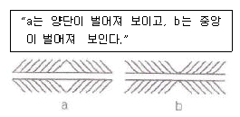
- M0ler-Lyer의 착시
- Helmhotz의 착시
- Hering의 착시
- Poggendorf의 착시
(정답률: 60%)
4. 다음 중 재해예방의 4원칙에 해당하지 않는 것은?
- 손실 추정의 원칙
- 대책 선정의 원칙
- 예방 가능의 원칙
- 원인 계기의 원칙
(정답률: 84%)
5. 교육방법 중 강의법(Lecture)의 장점으로 볼 수 없는 것은?
- 강사의 입장에서 시간의 조정이 가능하다.
- 참가자는 긍정적이며, 능동적 입장에 놓인다.
- 전체적인 교육내용을 제시하는데 유리하다.
- 비교적 많은 인원을 대상으로 단시간에 지식을 부여할 수 있다.
(정답률: 73%)
6. 위험예지훈련 4R(라운드)의 진행방법에서 3R(라운드)에 해당하는 것은?
- 목표설정
- 본질추구
- 현상파악
- 대책수립
(정답률: 85%)
7. 재해 손실비 중 직접 손실비에 해당하지 않는 것은?
- 요양급여
- 휴업급여
- 간병급여
- 생산손실
(정답률: 80%)
8. 다음 중 재해 발생시 가장 먼저 해야 할 일은?
- 현장 보존
- 상급 부서의 보고
- 재해자의 구조 및 응급조치
- 2차 재해의 방지
(정답률: 82%)
9. 산업안전보건법상 안전 · 보건표지중 경고표지의 종류에 해당하지 않는 것은?
- 고압전기 경고
- 레이저광선 경고
- 추락경고
- 몸균형상실 경고
(정답률: 38%)
10. 다음 중 안전점검의 목적에 관한 설명으로 적절하지 않은 것은?
- 기기 및 설비의 결함이나 불안전한 상태의 제거로 사전에 안전성을 확보하기 위함이다.
- 기기 및 설비의 안전상태 유지 및 본래의 성능을 유지하기 위함이다.
- 재해 방지를 위하여 그 재해 요인의 대책과 실시를 계획적으로 하기 위함이다.
- 현장에서 불필요한 시설을 중단시켜 전체의 가동율을 높이기 위함이다.
(정답률: 81%)
11. 다음 중 하버드 학파의 학습지도법 5단계에 해당하지 않는 것은?
- 준비
- 평가
- 연합
- 응용
(정답률: 69%)
12. 안전교육 훈련기법에 있어 지식형성 측면에서 가장 적합한 기본교육 훈련방식은?
- 실습방식
- 제시방식
- 참가방식
- 시뮬레이션방식
(정답률: 50%)
13. 산업안전보건법상 유해 또는 위험한 작업에 근로자를 사용할 때 실시하는 특별 교육 중 안전에 관한 교육을 실시하는 업무를 가진 사람은?
- 명예산업안전감독관
- 사업주
- 보건관리자
- 관리감독자
(정답률: 62%)
14. 산업안전보건법상 안전보건관리규정에 포함되어야 할 내용이 아닌 것은?
- 안전·보건교육에 관한 사항
- 작업장 안전관리에 관한 사항
- 사고 조사 및 대책 수립에 관한 사항
- 보호구 안전인증에 관한 사항
(정답률: 62%)
15. 집단에 있어서의 인간관계를 하나의 단면(斷面)에서 포착하였을 때 이러한 단면적(斷面的)인 인간관계가 생기는 기제(mechanism)와 가장 거리가 먼 것은?
- 모방
- 습성
- 동일화
- 커뮤니케이션
(정답률: 51%)
16. 다음 중 매슬로우(Maslow)가 제창한 인간의 욕구 5단계 이론을 올바르게 나열한 것은?
- 생리적 욕구 → 안전 욕구 → 사회적 욕구 → 존경의 욕구 → 자아실현의 욕구
- 안전 욕구 → 생리적 욕구 → 사회적 욕구 → 존경의 욕구 → 자아실현의 욕구
- 사회적 욕구 → 생리적 욕구 → 안전 욕구 → 존경의 욕구 → 자아실현의 욕구
- 사회적 욕구 → 안전 욕구 → 생리적 욕구 → 존경의 욕구 → 자아실현의 욕구
(정답률: 88%)
17. 다음 중 재해발생에 관한 아담스(Edward Adams)의 이론으로 옳은 것은?
- 통제부족 → 기본적원인 → 직접적원인 → 사고 → 상해
- 관리구조 → 작전적 에러 → 전술적 에러 → 사고 → 상해 · 손해
- 사회적 환경 및 유전적 요소 → 개인적 결함 → 불완전한 행동 및 상태 → 사고 → 상해
- 개인 · 환경적 요인 → 불안전 행동 및 상태 → 에너지 및 위험물의 예기치 못한 폭주 → 사고 → 구호
(정답률: 51%)
18. 다음 중 교육의 주체(Subject of Education)에 해당하는 것은?
- 강사
- 수강자
- 교재
- 교육방법
(정답률: 81%)
19. 내전압용절연장갑의 성능기준에 있어 최대사용전압에 따른 등급 구분에서 최소등급인 “00등급”의 색상으로 옳은 것은?
- 갈색
- 흰색
- 노랑색
- 녹색
(정답률: 74%)
20. 다음 중 리더십(leadership)의 특성이 아닌 것은?
- 밑으로부터의 동의에 의한 권한 부여
- 개인적 영향에 의한 부하와의 관계 유지
- 부하와의 넓은 사회적 간격
- 민주주의적 지휘 형태
(정답률: 79%)
2과목: 인간공학 및 시스템안전공학
21. 다음 중 음(音)의 크기를 나타내는 단위로 만나열된 것은?
- dB, Lux
- phon, Ib
- phon, dB
- dB, psi
(정답률: 84%)
22. 하나의 특정한 자극만이 발생할 수 있을 때 반응에 걸리는 시간을 “단순반응시간” 이라 하는데, 흔히 실험에서와 같이 자극을 예상하고 있을 때 전형적으로 반응시간은 약 어느 정도인가?
- 0.15 ~ 0.2초
- 0.5 ~ 1초
- 1.5 ~ 2초
- 2.5 ~ 3초
(정답률: 50%)
23. 고열 작업환경에서 심한 근육 작업 후에 근육의 수축이 격렬하게 일어나며, 탈수와 체내 염분농도 부족에 의해 야기되는 장해는?
- 열경련(heat cramp)
- 열사병(heat stroke)
- 열쇠약(heat prostration)
- 열피로(heat exhaustion)
(정답률: 79%)
24. 시스템의 평가척도 중 시스템의 목표를 잘 반영하는가를 나타내는 척도를 무엇이라 하는가?
- 신뢰성
- 타당성
- 측정의 민감도
- 무오염성
(정답률: 52%)
25. 작업 영역을 설계할 때 조정 가능성의 대상에 해당하지 않는 것은?
- 작업대의 조정 가능성
- 작업공구의 조정 가능성
- 작업대상물의 조정 가능성
- 작업대와 관련된 작업자 자세의 조정 가능성
(정답률: 59%)
26. 다음 중 표시장치의 선택에 있어 시각적 표시장치보다 청각적 표시장치를 사용하여야 유리한 경우는?
- 메시지가 복잡한 경우
- 메시지가 즉각적인 행동을 요구하는 경우
- 직무상 수신자가 한 곳에 머무르는 경우
- 메시지가 후에 재참조되는 경우
(정답률: 82%)
27. [그림]에서 A 는 자극의 불확실성, B 는 반응의 불확실성을 나타낼 때 C 부분에 해당하는 것은?
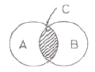
- 전달된 정보량
- 불안전한 행동량
- 자극과 반응의 확실성
- 자극과 반응의 검출성
(정답률: 53%)
28. [그림]과 같은 FT도의 컷셋(cut sets)으로 옳은 것은?
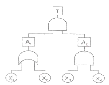
- {X1, X2, X3}{X2, X3, X4}
- {X1, X3, X4}{X2, X3, X4}
- {X1, X2, X3}{X1, X3, X4}
- {X2, X3, X4}{X1, X2}
(정답률: 74%)
29. 공간이나 제품의 설계시 움직이는 몸의 자세를 고려하기 위해 사용되는 인체치수는?
- 비례적 인체지수
- 구조적 인체지수
- 기능적 인체지수
- 해부적 인체지수
(정답률: 57%)
30. 시야는 색상에 따라 그 범위가 달라지는데 다음 중 시야의 범위가 가장 넓은 색상은?
- 백색
- 청색
- 적색
- 녹색
(정답률: 71%)
31. 다음 중 FTA에서 고장이나 실수를 일으키지 않으면 정상사상(top event)은 일어나지 않는다고 하는 것으로 시스템의 신뢰성을 표시하는 것은?
- cut set
- minimal cut set
- free event
- minimal pass set
(정답률: 69%)
32. 인간-기계 시스템의 신뢰도에 영향을 미치는 인간 실수 확률을 예측하는 기법은?
- PHA
- MORT
- THERP
- MTBHE
(정답률: 76%)
33. 위험조정을 위한 필요한 기술은 조직형태에 따라 다양하며 4가지로 분류하였을 때 이에 속하지 않는 것은?
- 보류(retention)
- 위험감축(reduction)
- 전가(transfer)
- 계속(continuation)
(정답률: 61%)
34. FT도에 사용되는 기호 중 “결함사상”을 나타내는 기호는?
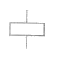
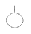
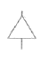
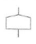
(정답률: 67%)
35. 프레스 공장에서 모든 방향으로 빛을 발하는 점광원에서 2m 떨어진 곳의 조도가 500Lux 였다면, 4m 떨어진 곳에서의 조도는 몇 Lux 인가?
- 50
- 100
- 125
- 250
(정답률: 63%)
36. 다음 중 기계가 인간을 능가하는 경우가 아닌 것은?
- 물리적인 양을 신속하게 계수하거나 측정한다.
- 완전히 새로운 해결책을 찾아낸다.
- 암호화된 정보를 신속하게 대량으로 보관한다.
- 반복적인 작업을 신뢰성 있게 수행한다.
(정답률: 84%)
37. 다음 중 설비의 가용도를 나타내는 공식으로 옳은 것은?
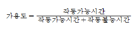
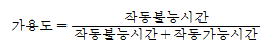
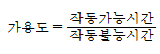
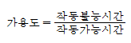
(정답률: 65%)
38. 반경 7㎝ 의 조종구를 45° 움직일 때 계기판의 표시가 3㎝ 이동하였다. 이 조종장치의 C/R비는 약 얼마인가?
- 1.99
- 1.83
- 1.45
- 1.00
(정답률: 67%)
39. 다음 중 시스템 안전을 위한 업무의 수행 요건이 아닌 것은?
- 안전활동의 계획 및 관리
- 시스템 안전에 필요한 사람의 동일성 식별
- 시스템 안전에 대한 프로그램 해석 및 평가
- 다른 시스템 프로그램과 분리 및 배제
(정답률: 73%)
40. Chapanis는 위험분석에 있어서 위험의 확률수준과 그에 따른 위험발생률을 정의했으며, 이에 대한 위험분석 내용으로 옳은 것은?
- 전혀 발생하지 않는(impossible) > 10-8/day
- 거의 발생하지 않는(remote) > 10-6/day
- 가끔 발생하는(occasional) > 10-5/day
- 자주 발생하는(frequent) > 10-3/day
(정답률: 63%)
3과목: 기계위험방지기술
41. 프레스에 대한 안전장치 중 금형 안에 손이 들어가지 않는 구조(No Hand in Die Type)인 것은?
- 자동송급식
- 양수조작식
- 손쳐내기식
- 감응식
(정답률: 40%)
42. 다음 위험점 중 기계의 회전운동하는 부분과 고정부사이에 위험이 형성되는 위험점으로 예를 들어 연삭숫돌과 작업받침대, 교반기의 날개와 하우스에서 발생되는 위험점은?
- 접선 물림점(tangential nip point)
- 물림점(nip point)
- 끼임점(shear point)
- 절단점(cutting point)
(정답률: 73%)
43. 기계의 안전조건 중 구조의 안전화 방법에 해당되지 않는 것은?
- 기계재료의 선정시 재료 자체에 결함이 없는지 철저히 확인한다.
- 사용 중 재료의 강도가 열화될 것을 감안하여 설계시 안전율을 고려한다.
- 기계작동 시 기계의 오동작을 방지하기 위하여 오동작방지 회로를 적용한다.
- 가공 경화와 같은 가공결함이 생길 우려가 있는 경우는 열처리 등으로 결함을 방지한다.
(정답률: 63%)
44. 탁사용 연삭기에서 연삭 숫돌과 작업대와의 간격은 몇 mm이하로 조정할 수 있는 작업대를 갖추고 있어야 하나?
- 10mm 이하
- 6mm 이하
- 5mm 이하
- 3mm 이하
(정답률: 56%)
45. 기계를 구성하는 요소에서 피로현상은 안전과 밀접한 관련이 있다. 피로 파괴현상과 가장 관련이 적은 것은?
- 소음(noise)
- 노치(notch)
- 치수 효과(size effect)
- 부식(corrosion)
(정답률: 67%)
46. 로울러기의 급정지 장치 중 복부 조작식과 무릎 조작식의 급정지장치 조작부 위치는? (단, 밀면과의 상대거리를 나타낸다.) (순서대로 복부 조작식/무릎 조작식)
- 0.5~0.7[m] / 0.2~0.4[m]
- 0.8~1.1[m] / 0.4~0.6[m]
- 0.8~1.1[m] / 0.6~0.8[m]
- 1.1~1.4[m] / 0.8~1.0[m]
(정답률: 72%)
47. 선반 작업시 주의사항으로 틀린 것은?
- 돌리개는 적정 크기의 것을 선택하고, 심압대 스핀들은 가능하면 길게 나오도록 한다.
- 칩(chip)이 비산할 때는 보안경을 쓰고 방호판을 설치하여 사용한다.
- 공작물의 설치가 끝나면, 척에서 렌치류는 곧바로 제거한다.
- 회전 중에 가공품을 직접 만지지 않는다.
(정답률: 80%)
48. 프레스 방호장치에 대한 설명으로 틀린 것은?
- 게이트식 방호장치는 가드를 닫지 않으면, 슬라이드가 작동되지 않아야 한다.
- 손쳐내기식 방호장치는 행정길이가 40mm이상, 행정수가 100 spm 이하의 프레스에 사용한다.
- 수인식 방호장치는 행정길이가 50mm이상, 행정수가 100spm 이하의 프레스에 사용한다.
- 감응식 방호장치는 슬라이드 작동 중 정지가능하고, 슬라이드 작동 중에는 가드를 열 수 없는 구조이어야 한다.
(정답률: 45%)
49. 크레인에 부착하여야 할 방호장치가 아닌 것은?
- 과부하방지장치
- 조속기
- 권과방지장치
- 브레이크장치
(정답률: 81%)
50. 산업안전기준에 관한 규칙에서 회전시험을 할 때, 미리 비파괴검사를 실시해야하는 고속회전체는?
- 회전축의 중량이 1톤을 초과하고, 원주속도가 25m/s 이상인 것
- 회전축의 중량이 5톤을 초과하고, 원주속도가 25m/s 이상인 것
- 회전축의 중량이 1톤을 초과하고, 원주속도가 120m/s 이상인 것
- 회전축의 중량이 5톤을 초과하고, 원주속도가 120m/s 이상인 것
(정답률: 72%)
51. 아세틸렌 용접장치에 대하여 취관마다 설치하여야 하는 것은? (단, 주관 및 취관에 근접한 분기관마다 이것을 부착한 때는 부착하지 않아도 된다.)
- 압력조정기
- 안전기
- 토치크리너
- 자동전격 방지기
(정답률: 76%)
52. 드릴링 머신의 드릴지름이 10mm 이고, 드릴 회전수가 1000rpm 일 때 원주 속도는 약 몇 m/min 인가?
- 3.14 m/min
- 6.28 m/min
- 31.4 m/min
- 62.8 m/min
(정답률: 79%)
53. 프레스 작업에서 점검해야 할 가장 중요한 것은?
- 클러치
- 매니퓰레이터
- 체크 밸브
- 권과방지장치
(정답률: 60%)
54. 밀링 작업 시 안전상 옳지 않은 것은?
- 면장갑은 사용하지 않는다.
- 칩 제거는 회전 중 청소용 솔로 한다.
- 커터 서치 시에는 반드시 기계를 정지시킨다.
- 일감은 테이블 또는 바이스에 안전하게 고정한다.
(정답률: 85%)
55. 다음 ( ) 안에 들어갈 말로 맞는 것은?
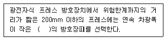
- 30mm 초과
- 30mm 이하
- 50mm 초과
- 50mm 이하
(정답률: 72%)
56. 그림과 같은 지게차에서 W를 화물중량, G 를 지게차 자체 중량, a 를 앞바퀴 중심부터 화물의 중심까지의 최단거리, b 를 앞바퀴 중심에서 지게차의 중심까지의 최단거리라고 할 때 지게차 안정조건은?
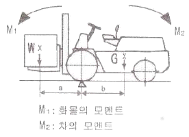
- W · a < G · b
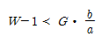
- W · a > G ·( b-1)
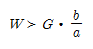
(정답률: 79%)
57. 와이어로프 표기에서 ( )속 25의 숫자는 무엇을 의미하는가?
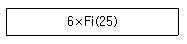
- strand를 구성하는 소선의 수
- 와이어로프의 직경
- 로프의 인장강도
- strand의 수
(정답률: 60%)
58. 드릴 작업시의 유의사항 중 틀린 것은?
- 드릴이 밑면에 나왔는지 확인을 위해 가공물 밑면에 손으로 만지면서 확인한다.
- 드릴을 장치에서 제거할 경우에는 회전을 완전히 멈추고 한다.
- 균열이 심한 드릴은 사용해서는 안 된다.
- 가공 중에는 소리에 주의하여 드릴의 날이 무디어 이상한 소리가 나면 즉시 드릴을 연마하거나 다른 드릴과 교환한다.
(정답률: 87%)
59. 산업용 로봇의 재해 발생에 대한 주된 원인이며, 본체의 외부에 조립되어 인간의 팔에 해당되는 기능을 하는 것은?
- 제동장치
- 외부전선
- 매니퓰레이터
- 배관
(정답률: 81%)
60. 다음 중 산업안전보건법에서 정하는 양중기에 해당되지 않는 것은?
- 크레인
- 리프트
- 곤돌라
- 체인블럭
(정답률: 77%)
4과목: 전기 및 화학설비위험방지기술
61. 다음 중 전폐형 방폭구조가 아닌 것은?
- 압력방폭구조
- 내압방폭구조
- 유입방폭구조
- 안전증방폭구조
(정답률: 66%)
62. 다음 중 정전기의 발생에 영향을 주는 요인과 가장 거리가 먼 것은?
- 접촉면적 및 압력
- 분리속도
- 물체의 표면상태
- 외부공기의 풍속
(정답률: 77%)
63. 다음 중 화재의 분류에서 전기화재에 해당하는 것은?
- A급 화재
- B급 화재
- C급 화재
- D급 화재
(정답률: 81%)
64. 다음 중 제전기의 설치 장소로 가장 적절한 것은?
- 대전물체의 뒷면에 접지물체가 있는 경우
- 정전기의 발생원으로부터 5~20㎝정도 떨어진 장소
- 오물과 이물질이 자주 발생하고 묻기 쉬운 장소
- 온도가 150℃, 상대습도가 80% 이상인 장소
(정답률: 64%)
65. 다음 중 정전 작업종료시 조치사항에 해당하지 않는 것은?
- 송전 재개
- 단락접지기구의 철거
- 검전기에 의한 정전확인
- 개폐기의 시건장치 제거
(정답률: 44%)
66. 다음 중 물과 반응하여 발생시키는 가스 중에서 위험도가 가장 큰 가스를 발생시키는 물질은?
- 칼륨
- 트리에틸알루미늄
- 수소화나트륨
- 탄화칼슘
(정답률: 46%)
67. 배관에 설치되는 밸브, 트랩, 기기 등의 앞에 설치하여 유체 속에 섞여 있는 이물질을 제거하여 기기 성능을 보호하기 위하여 설치하는 것은?
- reducer
- plug
- bail valve
- strainer
(정답률: 57%)
68. 인체에 전격을 당했을 경우 동전시간이 1초라면 심실세동을 일으키는 전류값은 얼마인가?
- 100mA
- 165mA
- 30mA
- 215mA
(정답률: 64%)
69. 다음 중 고체물질의 연소 종류가 아닌 것은?
- 표면연소
- 증발연소
- 자기연소
- 확산연소
(정답률: 59%)
70. 다음 중 반응기를 구조형식에 의하여 분류할 때 이에 해당하지 않는 것은?
- 탑형
- 화분식
- 교반조형
- 유동충형
(정답률: 59%)
71. 다음 중 산업안전보건법상 위험물의 종류에서 가연성 가스에 해당하지 않는 것은?
- 수소
- 질산에스테르
- 아세틸렌
- 메탄
(정답률: 60%)
72. 다음 중 인화성 액체의 증기 또는 가연성 가스에 의한 가스폭발 위험장소의 분류에 해당되지 않는 것은?
- 0종 장소
- 1종 장소
- 2종 장소
- 3종 장소
(정답률: 76%)
73. 다음 중 할로겐화합물 소화약제에 관한 설명으로 틀린 것은?
- 주된 소화효과는 억제소화이다.
- 유류나 전기 화재에 적합하다.
- 변질 우려가 있어 장기간 저장이 어렵다.
- 구성원소로는 C, F, Cl, Br2, 등이 있다.
(정답률: 59%)
74. 변압기 전로의 1선 지락 전류가 6A 일 때 제2종 접지공사의 접지저항값은 얼마인가?
- 10Ω
- 15Ω
- 20Ω
- 25Ω
(정답률: 55%)
75. 가정에서 튀김기름으로 요리 하다가 식용유에 불이 붙었을 때 채소기류를 기름에 넣으면 불이 꺼지는 경우에 해당되는 소화법은?
- 냉각소화법
- 질식소화법
- 제거소화법
- 희석소화법
(정답률: 50%)
76. 다음 중 전압의 분류가 잘못된 것은?(관련 규정 개정전 문제로 여기서는 기존 정답인 4번을 누르면 정답 처리됩니다. 자세한 내용은 해설을 참고하세요.)
- 저압 - 600볼트 이하의 교류전압
- 저압 - 750볼트 이하의 직류전압
- 고압 - 600볼트 초과 7천볼트 이하의 교류전압
- 초고압 - 1만볼트를 초과하는 직류전압
(정답률: 69%)
77. 다음 중 폭발하한농도(vol%)가 가장 높은 것은?
- 일산화탄소
- 아세틸렌
- 메탄
- 프로판
(정답률: 37%)
78. 전기기계 · 기구 중 대지전압이 몇 V 를 초과하는 이동형 또는 휴대형의 것에 대하여 누전에 의한 감전위험을 방지하기 위하여 감전방지용 누전차단기를 접속하여야하는가?
- 110V
- 150V
- 220V
- 380V
(정답률: 66%)
79. 다음 중 누전화재라는 것을 입증하기 위한 요건이 아닌 것은?
- 누전점
- 발화점
- 접지점
- 접속점
(정답률: 55%)
80. 산업안전보건법상 위험물질을 기준량 이상으로 제조 또는 취급하는 특수화학설비에 설치하여야 할 계측 장치가 아닌 것은?
- 온도계
- 유량계
- 압력계
- 경보계
(정답률: 58%)
5과목: 건설안전기술
81. 연약한 지반 위에 성토를 하거나 직접기초를 건설하고자 할 때 지중 점토층의 압밀을 촉진시키기 위한 탈수공법의 종류가 아닌 것은?
- 샌드 드레인 공법
- 웰포인트 공법
- 약액 주입 공법
- 페이퍼 드레인 공법
(정답률: 47%)
82. 점착성이 있는 흙의 함수량을 변화시킬 때 액성, 소성, 반고체, 고체의 상태로 변화하는 흙의 성질을 무엇이라 하는가?
- 간극비
- 연경도
- 예민비
- 포화도
(정답률: 69%)
83. 굴착면의 기울기 기준으로 옳지 않은 것은?(2021년 11월 19일 개정된 규정 적용됨)
- 습지 - 1:1 ~ 1:1.5
- 건지 - 1:0.5 ~ 1:1
- 풍화암 - 1:0.8
- 경암 - 1:0.5
(정답률: 73%)
84. 표준관입시험(SPT)에서의 N값은 샘플러를 63.5kg 해머로 흐트러지지 않은 지반에 몇 ㎝ 관입하는데 필요한 타격 횟수인가?
- 15㎝
- 30㎝
- 60㎝
- 75㎝
(정답률: 51%)
85. 현장에서 가설통로의 설치 시 준수사항으로 옳지 않은 것은?
- 건설공사에 사용하는 높이 8m 이상인 비계다리에는 10m 이내마다 계단참을 설치할 것
- 수직갱에 가설된 통로의 길이가 15m 이상인 때에는 10m이내마다 계단참을 설치할 것
- 경사가 15° 를 초과하는 때에는 미끄러지지 아니하는 구조로 할 것
- 경사는 30° 이하로 할 것
(정답률: 72%)
86. 현장에서 말비계를 조립하여 사용할 때에는 다음 보기의 사항을 준수하여야 한다. ( )안에 적합한 것은?
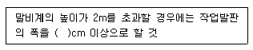
- 10
- 20
- 30
- 40
(정답률: 68%)
87. 강관비계의 구조에서 비계기둥 간의 최대 허용 적제 하중으로 옳은 것은?
- 500kg
- 400kg
- 300kg
- 200kg
(정답률: 66%)
88. 다음 중 통로 발판의 설치 기준으로 옳지 않은 것은?
- 작업발판의 최대폭은 1.2m 이내이어야 한다.
- 발판 1개에 대한 지지물은 2개 이상이어야 한다.
- 발판을 겹쳐 이음하는 경우 장선 위에서 이음을 하고 겹침길이는 20㎝ 이상으로 하여야 한다.
- 작업발판 위에는 돌출된 못, 옹이, 철선 등이 없어야 한다.
(정답률: 49%)
89. 해체 공사시 안전사항 준수내용으로 옳지 않은 것은?
- 사용기계기구 등을 인양하거나 내릴 때에는 와이어로프로 묶어서 작업한다.
- 적정한 위치에 대피소를 설치하여야 한다.
- 전도작업을 수행할 때에는 작업자 이외의 다른 작업자를 대피시킨 후 전도시키도록 한다.
- 강풍, 폭우, 폭설 등 악천후 시에는 작업을 중지한다.
(정답률: 63%)
90. 하수종말처리시설 신축공사 현장에서 층고 5.4m인 배수펌프장 상부슬래브를 타설하는 과정에서 붕괴사고가 발생했다. 다음 중 붕괴의 원인으로 볼 수 없는 것은?
- 동바리로 사용하는 파이프서포트를 4본으로 이어 사용하였다.
- 수평연결재를 높이 1.5m마다 견고하게 설치하였다.
- 조립도를 작성하지 않고 목수의 경험에 의해 지보공을 설치하였다.
- 콘크리트를 한 곳에 집중적으로 타설하였다.
(정답률: 58%)
91. 포화도 80%, 함수비 28%, 흙 입자의 비중 2.7일 때 공극비를 구하면?
- 0.940
- 0.945
- 0.950
- 0.955
(정답률: 65%)
92. 양중기계의 와이어로프에 대한 설명 중 옳은 것은?
- 와이어로프의 안전계수는 근로자가 탑승하는 경우 그렇지 않은 경우보다 더 높아야 한다.
- 이음매가 있는 와이어로프가 이음매가 없는 와이어로프에 비해 많이 이용된다.
- 와이어로프의 절단은 기계적 방법을 피하고 가스용단에 의해서만 절단한다.
- 지름의 감소가 공칭지름의 10%인 와이어로프도 사용가능하다.
(정답률: 61%)
93. 콘크리트의 유동성과 묽기를 시험하는 방법은?
- 다짐시험
- 슬럼프시험
- 압축강도시험
- 평판시험
(정답률: 69%)
94. 근로자가 상시 통행하는 작업통로에서 조명시설의 조도는 최소 얼마 이상인가?
- 25 Lux
- 50 Lux
- 75 Lux
- 100 Lux
(정답률: 81%)
95. 다음 중 채석작업을 하는 때 채석작업계획에 포함되어야 하는 사항에 해당되지 않는 것은?(오류 신고가 접수된 문제입니다. 반드시 정답과 해설을 확인하시기 바랍니다.)
- 굴착면의 높이와 기울기
- 기둥침하의 유무 및 상태 확인
- 암석의 분할방법
- 표토 또는 용수의 처리방법
(정답률: 40%)
96. 다음 중 해체작업을 하는 때에 해체계획서 작성시 포함할 사항으로 옳지 않는 것은?
- 사업장내 연락 방법
- 해체물의 처분계획
- 해체의 방법 및 해체 순서도면
- 발파 방법
(정답률: 38%)
97. 다음 중 사다리식 통로를 설치하는 때에 준수하여야 하는 사항으로 옳지 않은 것은?
- 발판과 벽과의 사이는 15㎝ 이하의 간격을 유지할 것
- 사다리가 넘어지거나 미끄러지는 것을 방지하기 위한 조치를 할 것
- 사다리의 상단은 걸쳐놓은 지점으로부터 60㎝ 이상 올라가도록 할 것
- 사다리식 통로의 길이가 10m 이상인 때에는 5m 이내마다 계단참을 설치할 것
(정답률: 39%)
98. 붕괴 등의 방지를 위하여 터널지보공을 설치한 후에 수시로 점검하여야 할 사항으로 가장 거리가 먼 것은?
- 부재의 손상, 변형, 부식, 변위, 탈락의 유무
- 통신설비의 상태
- 부재의 접속부 및 교차부의 상태
- 기둥의 침하 유무 및 상태
(정답률: 66%)
99. 다음 중 시멘트 참고에서 시멘트 포대의 올려 쌓기의 가장 적절한 양은?
- 20포대 이하
- 17포대 이하
- 15포대 이하
- 13포대 이하
(정답률: 49%)
100. 차량계 하역운반기계에 단위화물의 무게가 100kg이상인 화물을 싣는 작업을 할 때 작업의 지휘자를 지정하여 준수하도록 하여야 하는 사항으로 옳지 않은 것은?
- 작업순서 및 그 순서마다의 작업방법을 정하고 작업을 지휘할 것
- 기구 및 공구를 점검하고 불량품을 제거할 것
- 당해 작업을 행하는 장소에는 출입제한을 두지 않을 것
- 로프를 풀거나 덮개를 벗기는 작업을 행하는 때에는 적재함의 화물이 낙하할 위험이 없음을 확인한 후에 당해 작업을 하도록 할 것
(정답률: 78%)